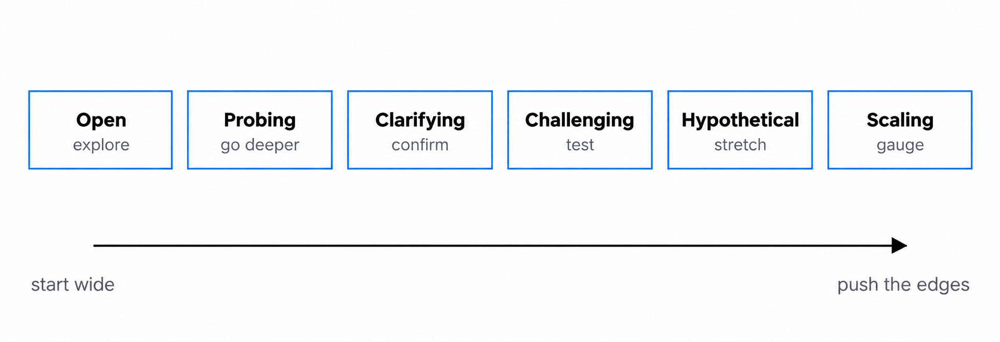
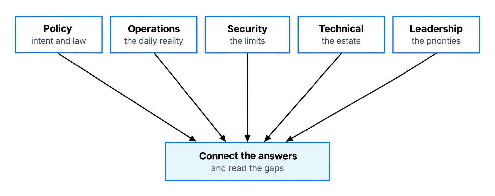
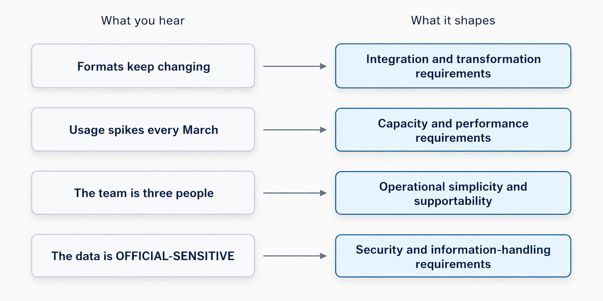

Asking better discovery questions
Better questions expose the real problem, hidden constraints and risky assumptions before they shape the design.
You'll come away with:
- the main types of discovery question and when each is useful
- ways to adapt your questions to different stakeholders and perspectives
- techniques for uncovering constraints, assumptions and gaps in the evidence
- a practical way to test what has been presented as a requirement
- a method for turning discovery conversations into useful architecture evidence
Question types and when to use them
Discovery is not about working through a standard questionnaire. You are trying to understand the problem, the people affected by it, the constraints around it and what the team still does not know. GOV.UK discovery guidance explicitly recommends breaking down assumptions and asking questions before committing to a solution.
One useful way to prepare is to think about the different jobs a question can do. This is a practical teaching model rather than an official framework, and you will move between the question types as the conversation develops.

Open questions give people room to describe what happens in their own terms. Questions such as "Talk me through what happens when an application arrives" are useful while you are still learning how the service works.
Probing questions follow something worth investigating. If someone says a process takes six weeks, ask where that time goes, what causes delay and what evidence exists for it.
Clarifying questions remove ambiguity. "Real time", "high volume", "all users" and "business critical" can mean very different things to different people. Ask what they mean in this service and how the team would recognise whether the requirement had been met.
Challenging questions test assumptions without treating them as mistakes. Ask what makes a deadline fixed, where a requirement originated, what would happen if it were not met, or whether an existing process genuinely has to remain unchanged.
Hypothetical questions test the edges. What happens if demand doubles, the supplier is unavailable, the policy changes or a dependency is late? They are particularly useful for exposing risks and assumptions.
Prioritising questions help when everything has been described as important. Rather than relying only on numerical scores, ask what must be protected if time or money becomes constrained, what can be traded off and who has authority to make that choice.
There is no required order. Start broadly when you need context, go deeper where the evidence is weak, and challenge assumptions when they begin to restrict the available options.
Different stakeholders hold different pieces
No single stakeholder is likely to have the complete picture. Discovery works better when you compare perspectives rather than treating one person's account as the definitive version of the service.

Policy colleagues can help explain the intended outcome, the policy background and where legislation or ministerial commitments may affect the work. Ask what government is trying to change, what is genuinely fixed and which parts of the current approach are simply how the policy happens to be implemented today.
Operational colleagues can show you what happens in practice. Ask them to walk through normal cases, difficult cases, exceptions, delays and workarounds. Where the documented process differs from reality, understand why.
Security, privacy and information-assurance specialists can help identify threats, obligations, sensitive information, organisational controls and evidence needed for assurance. Do not assume that one team owns every security decision; responsibilities vary between organisations.
Technical and service-management colleagues can explain existing systems, interfaces, operational constraints, technical debt, support arrangements and team capability. Ask what is difficult to change, what commonly fails and what the evidence says about current performance.
Product, delivery, commercial and senior stakeholders may hold evidence about priorities, funding, contracts, delivery commitments and organisational risk. Ask what is genuinely fixed, what could change and who has authority to make those decisions.
The useful insight often appears when two accounts do not quite agree. Treat that difference as something to investigate rather than deciding immediately which person is right.
Find the constraints nobody thinks to mention
Some constraints appear clearly in a brief. Others are so familiar to the organisation that nobody thinks to mention them.
Commercial constraints might include an existing contract, conditions attached to a framework or other procurement route, licensing commitments, supplier lead times or approvals needed before money can be spent.
Operational constraints might include limited support hours, specialist skills that are difficult to obtain, release windows or dependencies on teams with their own priorities.
Data constraints might concern ownership, quality, access, retention, legal basis, interfaces or uncertainty about which source is authoritative. Policy and legislative constraints may determine what the service must achieve while still leaving several ways of implementing it.
Do not classify a constraint as hard simply because somebody says "we have always done it this way". Ask where it comes from, who can change it, what would be involved and what evidence shows that it genuinely limits the options.
GOV.UK discovery guidance makes a similar distinction between hard constraints that are difficult to change and softer constraints such as existing processes that teams may be able to challenge.
Use the Five Whys carefully
The Five Whys is a simple root-cause technique: take an observed problem, ask why it happened and then continue investigating the answer until you reach causes that are useful to act on.
Despite the name, five is not a target. A useful investigation might stop earlier, continue further or branch because several causes contributed to the problem.
For example, suppose reports regularly arrive late. Asking why might reveal that data arrives late, because contributors submit it in different formats, because different teams follow different guidance. That is more useful than starting with "we need a new reporting system".
The important part is evidence. Each answer should be something you can substantiate or investigate. If the chain turns into a sequence of plausible guesses, you have created another set of assumptions rather than found a cause.
Complex government services are also rarely explained by one neat causal chain. Policy, process, technology, suppliers, users and organisational structures can interact. Use Five Whys as a prompt to investigate further, not as proof that you have found the single root cause.
Test what has been presented as a requirement
Discovery often starts with statements already labelled as requirements. Some will be well evidenced. Others will contain assumptions about the solution.
Before designing around one, ask:
- Source: where did it come from: legislation, policy, user research, operational evidence, a security assessment, a contract, an organisational standard or someone's preference?
- Outcome: what need, obligation or problem is it trying to address?
- Evidence: what demonstrates that it matters, and how reliable is that evidence?
- Consequence: what happens if it is not met?
- Precision: is it clear enough to evaluate or test?
- Priority: what could be traded off if time, cost or another requirement conflicts with it?
- Stability: what assumptions could change it, and how likely are they to change?
Be particularly careful to separate an obligation from an implementation choice. Legislation might require the service to verify something, but that does not automatically tell you when verification must happen or which technology must perform it.
Suppose a team says:
We need real-time validation against the Companies House register.
Start by asking what outcome requires validation, how current the information needs to be, what happens when validation is unavailable, expected volumes, how exceptions are handled and what evidence supports the required response time.
The resulting requirement might be that the service must establish that an organisation meets particular conditions before a defined point in the process. Live API validation, scheduled checks and manual handling could then be assessed as credible options if they satisfy that requirement.
Discovery should narrow the problem and strengthen the evidence without choosing an implementation before the relevant trade-offs have been examined.
Ask difficult questions without creating defensiveness
Some valuable questions challenge decisions that people have already invested time in. How you ask them matters.
"Why are we doing it that way?" can sound like a judgement. "What led us to this approach?" asks for the same information without assuming the decision was wrong.
Instead of declaring that an approach will fail, ask what would happen under the condition you are concerned about. If you think an assumption is weak, ask what evidence would confirm it.
A premortem can also help expose risk. Ask the group to imagine that the service has gone wrong and identify what could plausibly have caused it. Treat the answers as hypotheses to investigate rather than predictions.
Finally, play important points back. "I think I heard that the deadline is fixed because the legislation takes effect in April, but the current process could change. Is that right?" gives people an opportunity to correct your understanding before it becomes an architecture assumption.
A discovery question bank
A question bank is useful as a prompt, not a script. Choose questions that fit the problem and the evidence you already have.
The problem
- What outcome are we trying to achieve?
- Who experiences the problem and how do we know?
- How is it handled today?
- What evidence shows that it is worth solving?
- How would we recognise an improvement?
The users and service
- Who are the users and what are they trying to achieve?
- What happens before and after their interaction with this part of the service?
- What barriers, accessibility needs or assisted-digital needs have research identified?
- Which offline processes or other organisations are part of the journey?
The constraints
- What is genuinely fixed, and what evidence makes it fixed?
- Which legislation, policy, contracts or organisational standards apply?
- Which existing systems or services must we interact with?
- Who will operate and support the service?
- Which constraints could be changed if there were enough value in doing so?
The uncertainty and risk
- What are we assuming?
- Which assumption would hurt us most if it were wrong?
- What has failed before and what evidence do we have about why?
- Which dependencies are outside the team's control?
- What would require escalation, service interruption or public explanation?
The future
- What changes are already expected?
- Which demand, policy or operational assumptions are uncertain?
- How long does the organisation expect this service or capability to remain useful?
- What evidence would cause us to revisit today's decisions?
Turn answers into architecture evidence
Discovery answers should not map directly to technologies. They should improve your understanding of the problem and help define requirements, constraints, assumptions and evaluation criteria.

Treat the signals in this diagram as prompts for investigation rather than automatic design decisions.
If data arrives in several changing formats, ask how much variation exists, who controls the formats, how quickly they change and where transformation would be best handled. A transformation component may become one option, but the evidence does not select it by itself.
If usage peaks at a particular time, establish the size and duration of the peak, required service levels, acceptable degradation and what current measurements show. Those facts become evaluation criteria for the available approaches.
If a small team must operate the service, supportability and operational complexity become important criteria. That does not automatically rule particular technologies in or out.
Likewise, information sensitivity and government security markings inform the security requirements and risk assessment. They should not be treated as automatic hosting decisions. In particular, OFFICIAL-SENSITIVE is an additional marking within the OFFICIAL classification rather than a separate classification tier.
After a discovery session, pull the evidence together:
- what have we learned about the problem and desired outcome?
- which requirements and constraints are now supported by evidence?
- which assumptions still need testing?
- what risks and dependencies have appeared?
- what remains uncertain?
- what evidence will we need before comparing or recommending solution options?
That gives the next architecture activity something useful to work with. The purpose of discovery questions is not to produce a technology answer in the room. It is to make the later decision better informed and easier to defend.
This guide describes practical discovery techniques for Solution Architects working around UK government services. The question categories and examples are teaching aids rather than an official government framework.
Last reviewed September 2026 against the primary guidance and supporting sources below. Government policy and guidance change, so check the source before relying on it.